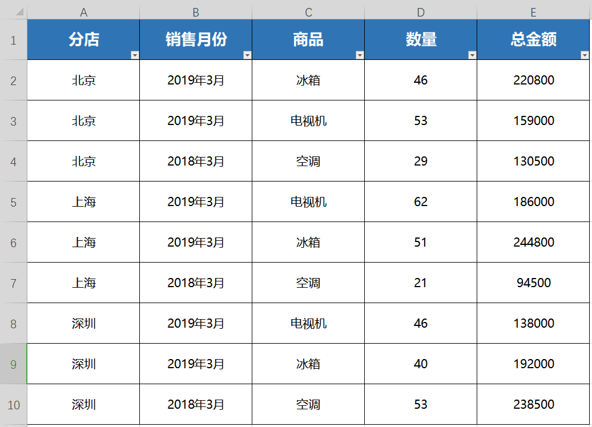
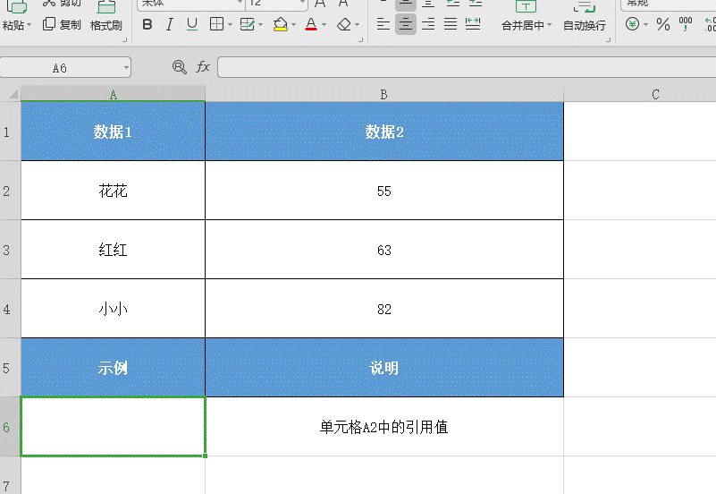
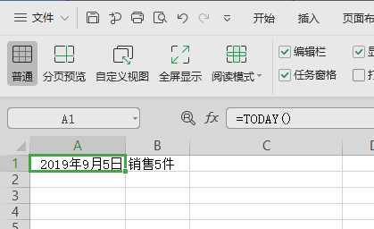

Excel
ExcelExcel界面认识Excel公式概述创建引用其他单元格的值的公式查看公式输入包含内置函数的公式绝对引用、相对引用和混合引用之间的区别功能详解数据透视表实例与应用条件格式单元格格式自定义排序高级筛选格式刷智能分列数据有效性保护工作表查找/替换/定位函数LOOKUPVLOOKUPHLOOKUPINDIRECTCOUNTCOUNTIFIFIFSROWSCOLUMNCOLUMNSCHOOSENOWTODAYLeftRightMidMATCHINDEX快捷键使用技巧行列冻结批量填充下拉列表实例常用9类公式用法01 求和公式1、多表相同位置求和（SUM）2、根据条件求和（SUMIF）3、多条件求和（SUMIFS）02 判断公式1、判断是否满足条件（IF）2、自定义报错结果（IFERROR)03 查找公式1、查找公式（LOOKUP）2、跨表查找匹配数据（VLOOKUP）04 统计公式1、统计相同（名称/数据/条件）出现数量（COUNTIF）05 提取公式1、左起提取字符（LEFT）2、右起提取字符（RIGHT）3、从数据中间提取字符（MID）06 引用公式1、引用单元格内容（INDIRECT）07 日期公式1、生成日期格式（DATE）2、计算日期间隔天数（DATEIF）3、录入当前日期（TODAY）08 数字处理公式1、四舍五入（ROUND）2、生成随机数（RAND）3、计算单元格文本公式（EVALUATE）09 其他公式1、计算文本字符数量（LEN）2、显示当前表格所在路径（CELL）3、在其他单元格显示公式（FORMULATEXT）如何在时间函数Today后面输入文字？常用公式详解VLOOKUP函数SUMIFS求和函数DATEDIF日期差函数
Excel界面认识
Excel公式概述
创建引用其他单元格的值的公式
选择单元格
键入等号“=”。(注意：excel中的公式始终以等号开头)
选择一个单元格，或在所选单元格中键入其地址
4.输入运算符。例如：-代表相减
5.选择下一个单元格，或在所选单元格中键入其地址

6.按Enter。计算结果将显示在包含公式的单元格中。
查看公式
- 在单元格中输入公式时，该公式还会出现在编辑栏中。
2.要查看公式，请选择一个单元格，该单元格会出现在编辑栏中。
输入包含内置函数的公式
选择一个空单元格。
键入一个等号“=”，然后键入函数。 例如，用“=SUM”计算销售总额。
键入左括号“(”。
选择单元格区域，然后键入右括号“)”。
5.按 Enter 获取结果。
绝对引用、相对引用和混合引用之间的区别
- 相对引用 公式中的相对单元格引用（如 A1）是基于包含公式和单元格引用的单元格的相对位置。 如果公式所在单元格的位置改变，引用也随之改变。 如果多行或多列地复制或填充公式，引用会自动调整。 默认情况下，新公式使用相对引用。 例如，如果将单元格 B2 中的相对引用复制或填充到单元格 B3，将自动从 =A1 调整到 =A2。

- 绝对引用 公式中的绝对单元格引用（如 $A$1）总是在特定位置引用单元格。 如果公式所在单元格的位置改变，绝对引用将保持不变。 如果多行或多列地复制或填充公式，绝对引用将不作调整。 默认情况下，新公式使用相对引用，因此您可能需要将它们转换为绝对引用。 例如，如果将单元格 B2 中的绝对引用复制或填充到单元格 B3，则该绝对引用在两个单元格中一样，都是 =$A$1。

- 混合引用 混合引用具有绝对列和相对行或绝对行和相对列。 绝对引用列采用 $A1、$B1 等形式。 绝对引用行采用 A$1、B$1 等形式。 如果公式所在单元格的位置改变，则相对引用将改变，而绝对引用将不变。 如果多行或多列地复制或填充公式，相对引用将自动调整，而绝对引用将不作调整。 例如，如果将一个混合引用从单元格 A2 复制到 B3，它将从 =A$1 调整到 =B$1。
功能详解
数据透视表实例与应用
这是某品牌分店3月销售商品数据表，我现在想要统计各商品及各分店的销售总额，可以使用筛选+求和功能。
但步骤比较繁琐，今天介绍一个实用的数据处理工具-数据透视表，可快速进行数据分析汇总。

方法步骤
首先任意选中一个有数据的单元格，点击菜单栏“插入”-“数据透视表”。
此处的区域会自动选择，不需要修改，点击“确定”;
此时弹出一个新工作表，看到右边的数据透视表窗格，分为两大版块，“字段列表”和“数据透视表区域”；而区域分为四块内容，“行区域”、“列区域”、“值区域”、“筛选器”。
选中需要进行分析的字段，长按拖动至需要的区域，将呈现出不一样的统计结果。

想要统计各商品及各分店的销售总额。
所以将“商品”字段拖进“行区域”，“分店”字段拖动至“列区域”，“总金额”字段拖进“值区域”。
此时可看到工作表已自动算出各商品及各分店的销售总额。
其中“值汇总”默认是求和，我们也可以任意选中一个有数据的单元格，鼠标单击右键，找到“值汇总依据”。
这里可以选择“计数”、“平均值”、“最大值”等。
此处可看到“值显示方式”也可变化，根据自己需要设置即可。
现在再来看看“筛选器”的作用，将刚刚的字段调整一下位置。
“商品”拖至“筛选器”区域、“销售月份”拖至“行区域”。
此时表格布局发生了变化，首行新增了一项“商品”项；
点击“下拉箭头”可以选择想要查看的商品数据，比如选择“冰箱”。
那么此时整个表格显示的就是各分店3月份冰箱的销售数据了。
条件格式
单元格格式
自定义排序
高级筛选
格式刷
智能分列
数据有效性
保护工作表
查找/替换/定位
函数
LOOKUP
LOOKUP(查找值，查找向量，[返回向量])
- 在数据表中查找一个值，就会用到查找函数LOOKUP。
例如我们有一份学生的成绩表，我们想要在表格中查询获得95分的学生名单，用LOOKUP函数就能轻松的帮你找到。
在使用这个函数要注意的有两点
LOOKUP函数的使用要求查询条件按照升序排列，所以使用该函数之前需要对表格进行排序处理。
查询的条件可以高于查询条件列的最大值，但是不能低于查询条件列的最小值。
我们以这份学生成绩表为例，选中（E1）单元格，选择插入函数，选择LOOKUP，点击确定。
在弹出的窗口中，我们选中查找值，查找值是我们所要查找的数据。
在这里我们试着查找一下获得95分的学生，我们点击（D2），这样就输入了查找值。
查找向量是我们要查找的数据范围，我们选中（B2:B10），在这个范围内查找。
返回向量是我们的查找向量所对应的含义范围。
在这里我们选中（A2：A10），点击确定，马上就查找出了95分的学生，小北。
那么，当我们查询的数据在表格中不存在的时候会发生什么呢？
LOOKUP函数有非精确查找的功能，所以它会自动帮我们匹配最接近结果的查找值。
在这个表格里没有55分的学生，我们在（D3）输入55，试着查找看看。
选中（E3）单元格，选择插入函数，选择LOOKUP，点击确定。
和刚才一样，依次输入查找值，查找向量，返回向量，点击确定。
可以看到系统帮我们选出了最接近55分的学生，50分的小花。
VLOOKUP
VLOOKUP(查找值，数据表，列序数，[匹配条件])
- VLOOKUP函数可以匹配两个表格的数据
在查询结果表中，光标定位到C3单元格，点击插入函数按钮，找到“vlookup”；
“查找值”即要查询的商品项，输入“B3”；
“数据表”就是数据源区域，切换到被查询表，选中B2:E13区域；
“列数据”指目标列在整个框定区域的第几列，“订货数量”在第2列，填2；
“匹配条件”分为精确查找0和模糊查找1，此处需要精确查找，输入0；
此时即可快速匹配两个表格的数据~
VLOOKUP逆向查询
- 下面介绍“VLOOKUP”逆向查找的方法，此处涉及到IF
函数，我们都知道IF函数的写法=IF(测试条件，真值，假值），同理=IF({1,0},B:B,A:A)，得到的结果就是B列的内
容换到了A列内容的前面；
在G2单元格中将vlookup函数中的第二项"被查询区域"修改为“IF({1,0},B:B,A:A)”,第三项“列序数”修改为“2”,
"回车"，“桌子”对应的数量就取到了；
将鼠标移动至单元格右下角，呈+字形时，向下拖动单元格复制公式，其他商品名称对应的数量也都取到了。
HLOOKUP
HLOOKUP(查找值，数据表，列序数，[匹配条件])
- HLOOKUP是一个横向查找函数，可以按行进行查找。
接下来在这个表中演示该函数的使用方法，假设我们要查找这几个员工三月的销售额。
选中B10单元格，点击插入函数，在查找框中查找并选中HLOOKUP函数，点击确定；
此时弹出对话框，共四项参数：
查找值为需要在数据表首行进行搜索的值，即此表首行的销售人员姓名，此处填入A10肖俊；
数据表是需要在其中查找数据的数据表，此处选中A1:F6填入，再单击快捷键F4添加绝对引用$。
目的是为了保持"数据表"这个区域不变；
行序数为数据表中待返回的匹配值的行序号，填入“三月”的行序数4；
匹配条件分为模糊查找和精确查找：TRUE或忽略为模糊查找，FALSE为精确查找，此处需要精确查找，填FALSE；
点击确定，将光标定位到B10单元格右下角，呈+字形时下拉填充单元格，即可快速批量查找。
INDIRECT
INDIRECT(单元格引用，[引用样式])
- INDIRECT函数能够快速的引用目标单元格的内容。
首先，我们选中（A6）单元格，点击插入函数，选中INDIRECT函数。

在弹出的窗口中，我们要输入单元格引用值。在这里我们试着选中（A2）单元格来操作看看。
这里要注意的是，在使用引用函数时，我们要输入英文字符格式的双引号，否则结果会显示#REF！
在（A2）前后输入双引号后，我们点击确定。
可以看到（A2）单元格的文本内容就被我们引用成功了！
COUNT
COUNT(值1,...)
- Count函数 一键统计有参数的项目
以此学员成绩单为例。
将光标放在（E4）处，点击插入函数-统计-COUNT函数，弹出对话框，共两项参数。
“值1”和“值2”是需要统计的参数，但只能够对数字型参数进行统计，且可以自行添加参数项。
在“值1”中输入（C3：C13），意思是统计C3至C13区域中有参数的项目。
点击确定，就可以得出此数据表有参数的项目的数量了。
COUNTIF
COUNTIF(区域，条件)
- COUNTIF函数，其作用就是计算区域中给定条件单元格的个数。
以下面这张成绩统计表格举例，现在需要统计出每个分数段内有多少人数；
点击“人数”单元格下方的空白单元格（E2），点击“插入函数”，选择“COUNTIF”函数；
在弹出的“函数参数”对话框中，“区域”选择B列的成绩（B2:B21），“条件”输入“>=90”。
点击“确定”，即可统计出90分以上的人数7人。
接下来的“80-89”分数的人数计算和上面的步骤一样。
在弹出的“函数参数”对话框中，“区域”选择B列的成绩（B2:B21），“条件”输入“>=80”。
点击“确定”，此时需要注意的是现在计算出的值是大于等于80的人，包含了90分以上的人数，怎么办呢？
点击单元格（E2），复制=号后面的公式COUNTIF(B2:B21,">=90")，点击√号。
回到单元格（E3），在后面添加一个“-”（减号），再粘贴刚刚复制的（E2）的公式。
此时E3的单元格公式应该为=COUNTIF(B2:B21,">=80")-COUNTIF(B2:B21,">=90")。
点击“回车”，就能得出“80-89”阶段中的人数了。
同理可算出“60-79”和“60分以下”的人数。
IF
IF(测试条件，真值，[假值])
- IF 函数是 「表格（Excel）」 中最常用的函数之一，它可以对值和期待值进行逻辑比较。
因此 IF 语句可能有两个结果。 第一个结果是比较结果为 True，第二个结果是比较结果为 False。
例如，=IF(C2=”Yes”,1,2) 表示 IF(C2 = Yes, 则返回 1, 否则返回 2)。
语法说明：
使用逻辑函数 IF 函数时，如果条件为真，该函数将返回一个值；如果条件为假，函数将返回另一个值。
例如：
- =IF(A2>B2,"超出预算","正常")
- =IF(A2=B2,B4-A4,"")
参数名称：
测试条件（必需）：要测试的条件。
真值（必需）：logical_test 的结果为 TRUE 时，您希望返回的值。
[假值]（可选）：测试条件 的结果为 FALSE 时，您希望返回的值。
使用示例：
=IF(C2=”Yes”,1,2)
在上面的示例中，单元格 D2 表示：如果（C2 等于 Yes，则返回 1，否则就返回 2）
=IF(C2=1,”Yes”,”No”)
在此示例中，单元格 D2 中的公式表示：IF(C2 = 1, then return Yes, otherwise return No)
如你所见，IF 函数可用于计算文本和数值。 它还可用于计算错误。
不仅可以检查一项内容是否等于另一项内容并返回单个结果，而且还可以根据需要使用数学运算符并执行其他计算。
此外，还可将多个 IF 函数嵌套在一起来执行多个比较。
=IF(C2>B2,”超出预算”,”在预算范围内”)
在上面的示例中，D2 中的 IF 函数表示如果
（C2 大于 B2，则返回“Over Budget”，否则就返回“Within Budget”）
=IF(C2>B2,C2-B2,0)
在上面的示例中，函数会返回一个数学运算，而不是文本结果。
E2 中的公式表示如果（实际值大于预算，则从实际金额中减去预算金额，否则就不返回任何结果）。
=IF(D7=”Yes”,E5*0.0825,0)，在此示例中，E7 中的公式表示如果：
（D7 = “Yes”，则计算 E5 * 8.25% 的总金额，否则就不应该付销售税，因此返回 0）
注意：如果要在公式中使用文本，需要将文字用引号括起来（例如“Text”）。
唯一的例外是使用 TRUE 和 FALSE 时，「表格（Excel）」能自动理解它们。
常见问题：
1、单元格中的 0（零）：真值 或 假值 参数无参数值。
若要查看返回的正确值，应为两个参数添加参数文本，或者为参数添加 TRUE 或 FALSE。
2、#NAME? （显示在单元格中）：这通常意味着公式存在拼写错误。
IFS
IFS(测试条件1，真值1，测试条件2，真值2，...)
- IFS常用的条件判定函数，完成多条件判定工作。
以左边这个成绩表为例，现需要判断学生成绩等级，条件如右表所示；

首先将光标定位至C2单元格，点击插入函数按钮，找到IFS函数-确定；
此处可看见ifs函数的语法结构为=IFS（测试条件1，返回值1，测试条件2，返回值2……条件判断N，返回值N）
允许测试最多127个不同的条件，只要有一个为真就返回该真值；
结合右表在参数中输入：
(B2=100,"满分",B2>=95,"优秀",B2>=85,"良好",B2>=70,"较好",B2>=60,"及格",B2<60,"不及格")
点击确定，再下拉填充公式，即可快速得到所有学生的成绩等级~
ROWS
ROWS(数组)
- ROWS函数的作用是返回数组或单元格区域中的行数。
假设我们有一个学生成绩表，要计算有多少名学生参加考试，通过计算行数就能得出结果。
下面给大家演示如何使用此函数。
首先将光标放在H2处，点击插入函数-查找与引用-ROWS函数。
此时弹出对话框，共一项参数。
“数组”是需要计算行数的数组或单元格区域。
在数组中输入A2：A31，点击确定，就能得共有多少名学生参加考试了。
COLUMN
COLUMN([参照区域])
- 使用COLUMN函数就能轻松标注，COLUMN函数的含义是返回给定引用的列标。
以这个学生成绩表为例，我们选中（D10）单元格。
选择插入函数，选择COLUMN函数。
在弹出的窗口中，我们需要填入参照区域，参照区域也就是准备求取其列号的单元格。
我们点击（B10）来试着求取一下列号，点击确定，显示出（B10）单元格的列号为2。
COLUMNS
COLUMNS(数组)
- COLUMNS函数的作用是返回数组单元格的列数，常常用于统计列数项目。
下面给大家举例说明，以此学生成绩表为例。
将光标放在（G10）处，点击插入函数-查找与引用-COLUMNS函数。
此时弹出对话框，需要填入一项参数。
“数组”指需要统计的列数区域。
此处选择区域（C2：I2），点击确定，就能得出总共需要考几门科目了。
CHOOSE
CHOOSE()
- CHOOSE的中文含义是“选择”，这个函数的使用也与“选择”相关，其作用是返回数值参数列表的值。
选中A8单元格，点击插入函数，找到CHOOSE函数，点击确定。
在此，我们需要填入序号和数值。
序号指用以指明待选参数序号的参数值，必须为1到254之间的数字。
数值指我们选择返回的源数据。
假设我们要返回“星期二”的值，在序号中输入2，数值1选择A2填入。
数值2选择A3，数值3选择A4，数值4选中A5,数值5选中A6。
点击确定，此时结果就返回了星期二。
NOW
NOW()
- NOW的中文含义是“现在”，当我们在EXCEL表中想插入现在的时间，就可以用NOW函数，此函数无需填入数值。
接下来在这个表中向大家演示一下这个函数的具体使用步骤。
选中单元格，点击插入函数，在查找框中查找并选中NOW函数，点击确定，即可看到当前时间插入完成了。
这个函数能实现更新时间功能，时间改变后只需选中单元格，按F9，就能刷新至最新时间。
点击右键-设置单元格格式-时间，还能更换不同的日期显示格式。
TODAY
TODAY()
- Today函数快速 计算间隔天数
以此日期表为例。
将光标放在（D3）处，在上方的函数框内输入=Today（）-C3+1
“Today（）-C3”是指用当前日期减去开始日期，即可得出两个时间段的间隔天数。
“+1”是表示当前日期也要算为一天。
回车确定，就可以得出间隔天数了。
将光标放在（D3）右下角呈+下拉填充公式就能得出所有的间隔天数了。
Left
Right
Mid
MATCH
- MATCH函数是一个查找函数，它可以返回指定数值在指定数组区域中的位置，经常和INDEX函数搭配，快速查找匹配表格内的数据。
以此表格为例，若我们想快速找到“香蕉”在水果区域中的位置。
单击「公式」选项卡-「插入函数」按钮，找到MATCH函数，此时弹出MATCH函数参数框。
「查找值」为我们所需查找的内容，如我们想要查找“香蕉”的位置，便在「查找值」中输入D2；
「查找区域」为数据所在的数组区域，在此选中A1:A10；
「匹配类型」中可以填写1、0、-1，若为1，将查找小于或等于「查找值」的最大数值；若为-1，将查找大于或等于「查找值」的最小数值；若为0，将查找等于「查找值」的第一个数值。
点击确定，即可返回“香蕉”所在的序数位置。
INDEX
INDEX(数组，行序数，[列序数]，[区域序数])
- INDEX函数可以返回指定的行序数，列序数的内容
我们已知公式=MATCH(D2,A1:A10,0)返回的是“香蕉”在水果区域中的行序数8。
将光标放置在「编辑栏」中补充公式为=INDEX(B1:B10,MATCH(D2,A1:A10,0))，意思是使用INDEX函数，返回B1:B10数组区域中第8行的数据，这样就可以快速匹配到“香蕉”的销量了。
快捷键
Ctrl
Ctrl+A 全选 Ctrl+S 保存工作簿 Ctrl+C 复制所选内容 Ctrl+V 粘贴所选内容 Ctrl+Z 撤销最近操作 Ctrl+X 剪切所选内容 Ctrl+B 应用加粗格式
Shift
Shift+滚轮 横向移动表格
使用技巧
行列冻结
批量填充
下拉列表
实例
常用9类公式用法
01 求和公式
1、多表相同位置求和（SUM）
示例公式：=SUM((Sheet1:Sheet3!B2)
解析：Sheet1 是起始表格名称，Sheet3 是结尾表格名称，B2 为求和单元格。
注意：删除或添加参加计算的表格后，公式结果会自动更新。
2、根据条件求和（SUMIF）
示例公式：=SUMIF(B2:B7,E1,C2:C7)
解析：B2:B7 是用于条件判断的单元格区域，E1 是条件，C2:C7 是求和区域。

注意：使用 SUMIF 函数时，也可配合通配符进行模糊求和。
3、多条件求和（SUMIFS）
示例公式：=SUMIFS(C2:C10,A2:A10,D2)
解析：C2:C10 为求和区域，A2:A10 是条件判断区域，D2 是条件。
注意：使用 SUMIFS 函数时，其条件范围和条件至少要出现一对。
02 判断公式
1、判断是否满足条件（IF）
示例公式：=IF(B3>=6,合格,不合格)
解析：B3>=6 是判断条件，“合格”为满足条件返回的内容，“不合格”是不满足条件返回的内容。
注意：IF 函数配合其他函数可进行多层嵌套。
2、自定义报错结果（IFERROR)
示例公式：=IFERROR(C2,自定义)
解析：C2 是公式检测的值，自定义是公式返回的值，可自行修改。
注意：该函数可检测其他公式计算是否产生错误，其返回内容可修改为空值或 0 ，从而参与到其他运算。
03 查找公式
1、查找公式（LOOKUP）
示例公式：=LOOKUP(D2,B2:B8,A2:A8)
解析：D2 是要查找的值，B2:B8 是查找的区域，A2:A8 是查找结果所在的区域。
注意：使用该函数也可进行模糊查找。
2、跨表查找匹配数据（VLOOKUP）
示例公式：=VLOOKUP(B3,被查询表!B2:C13,2,0)
解析：B3 是要查找的值，被查询表!B2:C13 是数据源区域， 2 是指目标列在整个框定区域的第几列， 0 代表着要精准查找。

注意：VLOOKUP 函数的“匹配条件”分为精确查找 0 和模糊查找 1 。
04 统计公式
1、统计相同（名称/数据/条件）出现数量（COUNTIF）
示例公式：=COUNTIF(B:B,>=90)
解析：B:B 是要统计的数据源， >=90 是统计的条件。
注意：COUNTIF 函数也可用户区间统计及精准统计。
05 提取公式
1、左起提取字符（LEFT）
示例公式：=LEFT(C3,3)
解析：C3 是要提取内容的源单元格，3 是要提取的字符数。
2、右起提取字符（RIGHT）
示例公式：=RIGHT(A1,13)
解析：A1 是要提取内容的源单元格，13 是要提取的字符数。
3、从数据中间提取字符（MID）
示例公式：=MID(B3,7,8)
解析：B3 是要提取内容的源单元格，7 要提取字符的开始位置，8是要提取的字符数。
06 引用公式
1、引用单元格内容（INDIRECT）
示例公式：=INDIRECT(A2)
解析：A3 即指需要引用的单元格内容。
07 日期公式
1、生成日期格式（DATE）
示例公式：=DATE(A2,B2,C2)
2、计算日期间隔天数（DATEIF）
示例公式：=DATE(A2,B2,C2)=DATEDIF(A2,B2,D)
解析：A2 是参与计算的开始日期， B2 是参与计算的结束日期，D 代表天，需要在其前后输入英文字符双引号。
注意：该函数参数“比较单位”，可选择三项：Y代表年，M代表月，D代表天。
3、录入当前日期（TODAY）
公式：=TODAY()
解析：输入公式，WPS 将会自动填充当前日期。
08 数字处理公式
1、四舍五入（ROUND）
示例公式：=ROUND(A2,1)
解析：A2 源数据，1 是四舍五入时用到的位数。
2、生成随机数（RAND）
公式：=RAND（）
3、计算单元格文本公式（EVALUATE）
示例公式：=EVALUATE(A2)
09 其他公式
1、计算文本字符数量（LEN）
示例公式：=LEN(B3)
2、显示当前表格所在路径（CELL）
示例公式：=CELL(filename)
注意：不同的参数对应不同的“信息类型”的值，详情参考下表：
3、在其他单元格显示公式（FORMULATEXT）
示例公式：=FORMULATEXT(G4)
解析：G4 是参照的引用单元格。
如何在时间函数Today后面输入文字？
1、打开表格，如图A1单元格是日期，应用的是Today函数，B1单元格是文本。

2、在C1单元格输入公式：=TEXT(A1,"yyyy年mm月dd日")&B1，即可完成该操作。
常用公式详解
VLOOKUP函数
用途：用于在某区域内查找关键字返回后面指定列对应的值
函数公式：=VLOOKUP（查找值，数据表，列序数，[匹配条件]）
函数解释：相当于=VLOOKUP（找什么，在哪找，第几列，精确找还是大概找一找）
最后一个参数[匹配条件]为0时执行精确查找，为1（或缺省）时模糊查找，模糊查找时如果找不到则返回小于第1个参数“查找值”的最大值。
▲精确查找：精确查找举例：查询某员工工资
函数公式示例：=VLOOKUP(E2,A:C,3,0)
▲模糊查找：将员工收入划分等级，工资低于6000属低收入，6000-8000中等收入，8000以上高收入。
函数公式示例：=VLOOKUP(C2,$F$4:$G$6,2,1)
SUMIFS求和函数
函数公式：=SUMIFS(求和区域,区域1,条件1,[区域2],[条件2],……)
函数解释：第1个参数是固定求和区域，区别SUMIF函数的判断一个条件，SUMIFS函数后面可以增加多个区域的多个条件判断。
▲举例：求上海地区货品2的销售额
函数公式示例：=SUMIFS(D:D,A:A,上海,B:B,货品2)
DATEDIF日期差函数
用途：计算日期差，有多种比较方式，可以计算相差年数、月数、天数，还可以计算每年或每月固定日期间的相差天数、以及任意日期间的计算等，灵活多样。
函数公式：=DATEDIF(开始日期，终止日期，比较单位)
函数解释：
参数1须小于参数2，即开始日期小于终止日期，否则会出错；
参数3可以是以下几种，分别代表不同的计算方式：
▲举例：计算相差年数，如计算年龄、工龄等
函数公式示例：=DATEDIF(B2,TODAY(),Y)